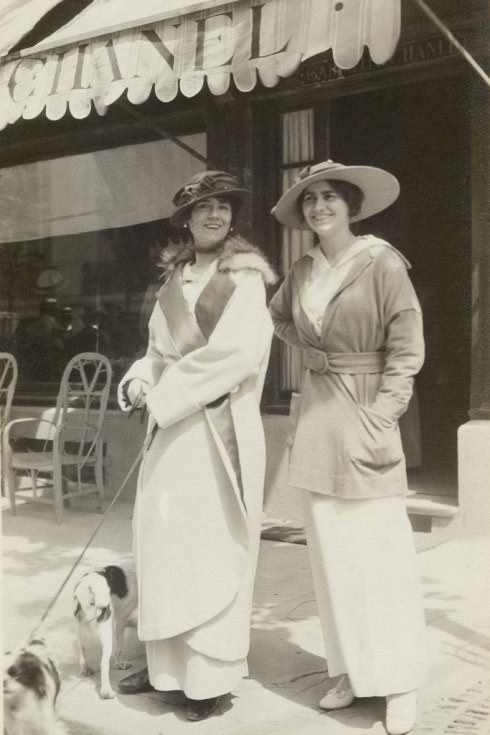

Gabrielle Bonheur Chanel
Modna dizajnerka Koko Šanel poznata je po bezvremenskom dizajnu, odelima zaštitnih znakova i malim crnim haljinama. Dvadesetih godina proslog veka lansirala je svoj prvi parfem i na kraju predstavila Šanel odelo i malu crnu haljinu, sa naglaskom na pravljenje odeæe koja je bila udobnija za žene. Postala je veoma cenjena ikona stila poznata po svojim jednostavnim, ali prefinjenim odelima uparenim sa sjajnim dodacima, poput nekoliko bisera.
Gabrielle Bonheur Chanel roðena je 1883. godine u dobrotvornoj bolnici koju su vodile sestre Providence (siromašna kuæa) u Saumuru, Francuska. Ona je bila drugo dete Jeanne s Albertom Chanelom (prva, Julia, roðena je manje od godinu dana ranije). Albert Chanel bio je usputni ulièni prodavac koji je prodavao radnu odeæu i donji veš, živeo nomadski život, putujuæi do i iz tržišnih mesta. Porodica je prebivala u zaseocima. 1884. oženio se Jeanne Devolle
Kad je Gabrijela imala 11 godina, Jeanne je umrla u 32 godini. Njen otac poslao je svoja dva sina da rade kao radnici na farmama i poslao svoje tri æerke u samostan Aubazine, koji je vodio sirotište. Bio je to èudan, štedljiv život, koji je zahtevao strogu disciplinu . Smeštaj u sirotište možda je doprineo Chanelovoj buduæoj karijeri, jer je tamo nauèila da šije. Sa osamnaest godina Chanel, prestara za ostanak u Aubazine, otisla je da živi u pansionu za katolièke devojke u gradu Moulins.
Kasnije u životu, Chanel je prièu o svom detinjstvu preprièavala nešto drugaèije. Èesto je ukljuèivala i glamuroznije raèune, koji uglavnom nisu istiniti.Ona je rekla da je, kad joj je umrla majka, otac otplovio za Ameriku da potraži bogatstvo, pa je poslata da živi sa dve tetke. Takoðe je tvrdila da se rodila deceniju kasnije od 1883. godine i da joj je majka umrla kad je bila mnogo mlaða od 12 godina
Nauèivši šivenje tokom svojih šest godina u Aubazineu, Chanel je pronašla posao kao krojaèica. Kad nije šila, pevala je u kabareu koji su poseæivali èasnike konjice. Chanel je svoj scenski debi otpevala na kafe-koncertu (popularno mesto zabave ere) u paviljonu Moulins, La Rotonde. Bila je poza, izvoðaèica koja je zabavljala gomilu izmeðu zvezda. Upravo u to vreme Gabrijela je stekla ime "Koko" kada je provodila noæi pevajuæi u kabareu, èesto pesmu, "Ko je video Coco?" Èesto je volela da kaže da joj je nadimak dao njen otac. Drugi veruju da je "Coco" potekla od Ko Ko Ri Ko i Kui ku'a vu Coco, ili je to bila aluzija na francusku reè za zadržanu ženu, kokos.
1906, Chanel je radila u banjskom gradu Vichi. Vichi se hvalila bogatstvom koncertnih dvorana, pozorišta i kafiæa gde se nadala da æe uspeti kao izvoðaè. Chanelova mladost i fizièki šarm impresionirali su one za koje je snimala audiciju, ali njen pevaèki glas je bio marginalan i nije uspela da naðe scenski rad. Chanel se vratila u Moulins, a njen bivši je progonio La Rotonde. Tada je shvatila da ozbiljna scenska karijera nije u njenoj buduænosti.
U Moulinsu, Chanel je upoznala mladog francuskog bivšeg oficira konjice i tekstilnog naslednika, Etienne Balsan. Sa dvadeset tri godine, Chanel je postala Balsonova ljubavnica. Sledeæe tri godine živela je s njim u njegovom dvorcu Roiallieu u blizini Compiegnea, poznatog podruèja zbog svojih šumskih konjièkih staza i lovaèkog života. Balzanovo bogatstvo omoguæilo je kultivaciju društvenog seta koji se razotkrivao u zabavljanju i zadovoljstvu ljudskih apetita, uz svu impliciranu prateæu dekadencu. Balsan je obasipao Chanel balonèiæima "bogatog života" - dijamantima, haljinama i biserima.
1908. Chanel je zapoèela aferu sa jednim od Balsanovih prijatelja, kapetanom Arthurom Edvardom 'Boi' Capel. Capel, bogati pripadnik engleske više klase, smestio je Chanel u stan u Parizu i finansirao je njene prve prodavnice. Par je vreme provodio zajedno u modernim letovalištima kao što je Deauville, ali uprkos Chanelovoj nadi da æe se zajedno useliti, Capel joj nikada nije bio veran. Njihova afera trajala je devet godina. Ni nakon što se Capel oženio engleskom aristokratkinjom, Ladi Diana Vindham 1918. godine, nije se potpuno raskinuo sa Chanel. Poginuo je u saobraæajnoj nesreæi 21. decembra 1919.
Chanel je umrla 10. januara 1971. u svom stanu u hotelu Ritz. Nikad se nije udavala, rekavši jednom "Nikad nisam htela da težim više na èoveku nego na ptici." Stotine ljudi okupilo se u crkvi Madeleine kako bi se oprostile od modne ikone. U poèast su mnogi ožalošæeni nosili Chanelova odijela.
Nešto više od decenije nakon njene smrti, dizajner Karl Lagerfeld preuzeo je kompaniju kako bi nastavio nasleðe Chanel. Danas njenu istoimenu kompaniju drži privatno porodica Vertheimer i dalje uspeva, za koju se veruje da svake godine stvara stotine miliona prodaje.

Krajem 1910. godine, Coco Chanel konaèno je raskinula sa Etienne Balsan i poèela da živi sa kapetanom "Boi" Capel. 1910. godine Coco je postala licencirani modista (proizvoðaè šešira) i otvorila je butik pod nazivom Chanel Modes na 21 Rue Cambon u Parizu. Ubrzo je ulica postala poznata širom sveta i bila je vezana za njeno ime pola veka.
1913. godine Coco Chanel otvorila je svoj butik u Deauvilleu koji je brzo privukao redovne klijente. Kao tvorac poznatih šešira sanjala je da razvije vlastitu liniju ženske odeæe. U ovom trenutku, ona nije imala pravo da pravi „prave“ ženske haljine, jer bi mogla biti izvedena pred sud zbog ilegalne konkurencije, jer nije bila licencirana krojaèica. Koko je pronašao rešenje. Poèela je da šije haljine od dres tkanine, koja je korišæena samo za muško donje rublje i zaradila je svoj prvi kapital na tome. Èlanovi bliske porodice Coco Chanel oduvek su bili podrška. Jedna je bila njena sestra Antoinette Chanel i njena tetka Adrienne Chanel. Obe devojke koje je Coco regrutovao za modeliranje Chanel-ovih dizajna i reklamiranje Chanel-ove modne odeæe.
Sva njena otkriæa oblaèenja nastala su na taj naèin. Tokom dizajniranja Coco se nije isticala, ali je pojednostavila detalje. Nije crtala svoje skice odeæe i nije ih šila. Obièno je Coco bacala krpu na manekenku, a zatim je isekla i sklapala bezobliènu masu materijala dok se željena silueta nije oèitovala.
Chanel je brzo postala svetski modni dizajner, prevræuæi se u centru pažnje. Stvorila je stil koji je do sada bio nezamisliv za žene - trenerke. Odvažila se da se pojavi u mornarskom odelu i uskoj suknji na plažama primorskih mesta. Stil koji je proizvela Kuæa kuæe Chanel bio je jednostavan, praktièan i elegantan. Meðutim, 1914. godine poèeo je Prvi svetski rat. U Francuskoj je vladao haos i „gozba tokom kuge“. Coco je nastavila intenzivno raditi, predstavljajuæi nove zahteve za odeæom i generišuæi nove ideje: prvo žensko mršavo odijelo kompanije Chanel. Par godina kasnije, ona je šila redingote bez pojasa i ukrasa, uklanjajuæi poprsje i obline gotovo muško strogo. Napravila je podcenjeni struk, košulju za haljine, pantalone za žene i pidžamu za plažu.
Uprkos èinjenici da je Kuæa kuæe Chanel predstavila pantalone modnih žena, Coco ih je nosila prilièno retko, jer je verovala da žena nikada neæe izgledati u pantalonama jednako dobro kao što to èini muškarac. Meðutim, dopala joj se kratka muška frizura. Razlog je jednostavan - o kratkoj kosi je lakše brinuti se. Jednom je Coco presekla kosu i ponosno izašla u svet, objašnjavajuæi da joj se sve u kuæi zapalilo i da su joj spalili kovrdze. Stoga je 1917. godine preovladao trend kratke muške frizure meðu ženama. Pre akcije Coco Chanel, žene su morale biti duge kose.
Kada je 1919. godine u saobraæajnoj nesreæi poginuo njen voljeni Artur "Boi" Kapel, Koko Šanel je rekla: "Ili æu i ja umreti ili æu završiti ono što smo zapoèeli zajedno. " Da se ova tragedija nije dogodila u Chanelinom životu, ona nikada ne bi poèela eksperimentirati sa crnom platnom. Neki kažu da je ona dodala odeæu u crnoj boji da bi sve žene u Francuskoj tugovale za svojom voljenim. Koko nije smela da žali zvanièno, jer nije bila udata za Arthura Capela.
U leto 1920-ih, Coco Chanel otvorila je veliku modnu kuæu u Biarritzu. Kasnije se srela s ruskim emigerom, velikim knezom Dmitrijem Pavlovièem, i oboje su osetili obostranu strast jedni prema drugima. Romantika je bila kratka, ali plodna. Koko je nauèila mnoge nove ideje od svog egzotiènog ljubavnika. Štaviše, posle ovog sastanka, u njenoj novoj kolekciji bili su delovi majica ruske narodne nošnje sa originalnim vezom. Najznaèajnije je da je tokom putne turneje po Francuskoj Dmitri Pavloviè upoznao Coco s ruskim parfumerom, Ernestom Beaukom, kada su se zaustavili u gradu Grasse. Ernestov otac radio je dugi niz godina na carskom dvoru.
Sastanak je oboma bio plodan. Nakon godinu dana napornog rada i dugotrajnih eksperimenata, Ernest je stavio pred Coco deset uzoraka i podelio ih u dve grupe. Prvo poluvreme Ernest Beauk brojao je od jedan do pet, drugi - od dvadeset do dvadeset èetiri. Coco je odabrala uzorak br. 5 i kad ju je Beauk pitao zašto je Coco Chanel odgovorila: „Svoju kolekciju lansiram 5. dana 5. meseca, pa mi se èini da æe broj 5 doneti sreæu - zato æu je nazvati no. 5"
Dizajneri su zlatnu teènost prolili u kristalnu bocu sa skromnom pravougaonom etiketom koja im je izgledala kao najbolje rešenje; obièno su boce parfema imale zamršene oblike. Kao rezultat toga, svet je dobio „parfem za žene koje mirišu na ženu“. Bio je to prvi sintetièki parfem od osamdeset sastojaka koji nije ponovio miris odreðenog cveæa, kao što je to bilo ranije. Uspeh koji su doživeli njegovi kreatori - Chanel no. 5 i dalje je najprodavaniji parfem na svetu.
Do ranih 20-ih svet se skoro završio u borbi za rodnu nejednakost. Žene su imale zakonsko pravo na rad, glasanje i abortus, ali su istovremeno izgubile lice. Moda je prolazila kroz situaciju kada je zbog tužnog egalitarizma ženska odeæa poèela da gubi svoju seksualnost i profinjenost.
Coco Chanel je to postigla i uspešno je uspela kombinovati neverovatne detalje u svojim modelima s revolucionarnim inovacijama i prkosnom ženstvenošæu. Izmislila je èuvenu „malu crnu haljinu“ koja je na prvi pogled izgledala nevešta, rustikalna haljina i bezliènost. Ovaj odluèni korak doneo je 44-godišnjoj dizajnerki svetsku slavu i uèinio je da naðe simbol elegancije, luksuza i dobrog ukusa.
Prvi modeli haljina napravljeni su od zaboravljenog teènog krep marokaina, dužine do kolena, ravnog kroja sa uskim rukavima do zgloba. Neverovatno taèna, podešena i revolucionarna dužina košenja razlikovala ih je od ostalih. Usput, Coco Chanel je vjerovala da dno haljine ne treba podizati iznad koljena, jer se ne mogu sve žene pohvaliti besprijekornom ljepotom ovog dijela tijela. Koktel haljine koje su skuplje imale su zarez u obliku slova V, a veèernje haljine imale su dubok dekolte pozadi. Trebalo je da nosi duge nizove bisera ili obojeni nakit, male jakne i malene šešire sa takvim vrstama haljina.
Mala crna haljina brzo je postala kultna odeæa i dobila statusni simbol. Èesto je kopiran, redizajniran i ponovo prilagoðen. Skup kompanija i modnih kuæa i dalje proizvodi ovu haljinu širom sveta. Popularnost ove haljine je neverovatna. Nove interpretacije ove haljine pojavljuju se do danas, tako da sa pouzdanjem možemo reæi da ova haljina nikada neæe izaæi iz mode.
Svet ju je prepoznao kao jedinu trendseterku najfinije elegancije. Chanel-ov koncept stila èvrsto je usidren u modnoj industriji. Chanel-ov stil znaèi da odelo treba da bude funkcionalno i udobno. Ako Chanel odelo ima dugmad, sigurno bi ih trebalo zategnuti. Chanel odelo se obièno nosi u cipelama s niskim potpeticama na prstima. Chanel je dizajnirala suknju ispod kolena sa džepovima na koje je poslovna žena mogla da stavi torbu za cigarete. Uzgred, ideja nošenja torbe preko ramena takoðe pripada Mademoiselle Coco.
Coco Chanel je do starosti održavala neverovatne performanse. Nove modne ideje padale su joj na pamet èak i u snu. Tajna uspeha ove fantastiène marke leži u njenim korenima. Kuæa od Chanel je od samog poèetka prodavala umetnost življenja, ali ne samo odeæu za žene.
ZVANICNA STRANICA
1969. godine, Chanelova fascinantna životna prièa postala je osnova za Broadway mjuzikl Coco, glumeæi Katharine Hepburn kao legendarnu dizajnerku. Alan Jai Lerner napisao je knjigu i tekstove za pesmu emisije, dok je Andre Previn komponovao muziku. Cecil Beaton je za produkciju vodila scenografiju i kostime. Emisija je dobila sedam nominacija za nagradu Toni, a Beaton je pobedila za najbolju kostimografiju, a Rene Auberjonois za najboljeg glumca.
Napisano je i nekoliko biografija modnog revolucionara, ukljuèujuæi Chanel i njen svet (2005.), koji je napisao Chanelov prijatelj Edmonde Charles-Rouk.
U televizijskom filmu 2008. godine Coco Chanel, Shirlei MacLaine glumila je poznatog dizajnera u vrijeme svog vaskrsenja u karijeri 1954. godine. Glumica je rekla za VVD da je dugo bila zainteresovana da igra Chanel. "Ono što je u njoj èudesno je to što ona nije jednostavna, razumljiva žena."
U filmu iz 2008. godine Coco Before Chanel, francuska glumica Audrei Tautou igrala je Chanel u svojim ranim godinama, od detinjstva do osnivanja svoje modne kuæe. 2009. godine Coco Chanel i Igor Stravinski opisali su Chanelovu vezu sa kompozitorom.